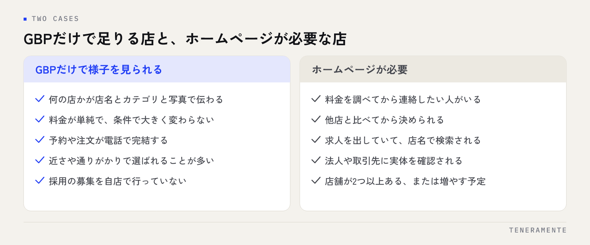

店舗の集客を考え始めると、まずGoogleビジネスプロフィール（GBP）を整えることになります。地図に表示され、電話も経路案内もそこから取れるため、ホームページを作る必要を感じにくくなります。店舗にホームページは必要かという問いの答えを決めるのは業種ではなく、来店を決める前にお客様が何を確認したいかです。この記事では、GBPだけで足りる店の条件と、足りなくなる場面を分けて整理します。
📌 この記事の結論
Googleビジネスプロフィールだけで足りるのは、提供するものと料金が単純で、予約まで電話で完結する店です。料金に幅がある、他店と比べられてから選ばれる、採用や法人からの問い合わせがある場合はホームページが必要になります。作ると決めたら全部をそろえず、1ページの構成から始めるほうが続きます。
01Googleビジネスプロフィールとホームページは、役割が違う
どちらも必要かどうかを考える前に、2つが担っている役割を分けて見てください。役割が違うので、どちらかがもう一方の代わりになるという関係ではありません。
GBPは見つけてもらうための場所です。地図検索や「地域名＋業種」の検索で表示され、所在地、営業時間、電話番号、写真、口コミ、簡単なメニューや商品が載ります。ただし情報の並び順も表示される量もGoogleが決めるため、こちらが伝えたい順番で読んでもらうことはできません。
ホームページは選ぶ理由を自分の順番で説明する場所です。料金が変わる条件、サービスの流れ、誰が担当するか、過去にどんな依頼を受けてきたか、よくある質問への答え——GBPの欄には収まらない説明を、読む順番まで決めて置けます。
この違いから、判断の基準は1つに絞れます。お客様が来店を決めるまでに「調べて納得したい情報」があるかどうかです。無ければGBPで足り、あればホームページが受け皿として必要になります。両者の関係はローカルSEOとMEOの違いでも整理しています。
02Googleビジネスプロフィールだけで足りる店の条件
次の条件にほぼ当てはまる店は、ホームページを急いで作る必要はありません。まずGBPを整えるほうが先に効きます。

- 何を提供している店か、店名とカテゴリと写真で一目で伝わる
- 料金が単純で、条件によって大きく変わらない
- 予約や注文が電話、またはすでに使っている予約サービスで完結する
- 他店と細かく比較されるより、近さや通りがかりで選ばれることが多い
- 採用の募集を自店で行っていない
- 法人や取引先からの問い合わせがほとんどない
定食屋、コインランドリー、理容室、クリーニングの取次店などが当てはまりやすい形です。この場合に優先すべきは、カテゴリの設定、営業時間と臨時休業の正確さ、店内と商品の写真、口コミへの返信です。ホームページを作る費用と手間を、ここに先に充てるほうが来店につながります。
ただし「今は足りている」という判断であって、ずっと不要という意味ではありません。あとで扱う4つの場面が出てきた時点で、必要側に移ります。
03ホームページがないと取りこぼす4つの場面
足りなくなるのは、だいたい次の4つのどれかです。思い当たるものがあれば、その受け皿を用意する価値があります。
料金を調べてから連絡したい人。施術やメニューに幅がある業種では、電話で聞かないと分からない状態そのものが問い合わせを止めます。料金表と、変わる条件が書かれた1ページがあるだけで解消します。
他店と比べてから決めたい人。検索結果に並んだ複数の店を順番に見ていく人は、情報が薄い店を候補から外します。口コミの数では差がつかないため、何が違うのかを文章で読める店が残ります。
応募を考えている人。求人サイトを見た人は、ほぼ必ず会社名や店名で検索します。仕事内容や働く人の様子が読める場所がないと、応募の前に迷いが残ります。
法人や取引先が実体を確認したい場面。取引の前に会社概要や所在地を確認されることがあり、地図の情報だけでは判断材料になりません。
このうち1つでも当てはまるなら、ページ数の多いサイトは不要でも、情報が読める場所は必要です。
04業種・営業形態で見る、必要度の目安
自店がどちらに近いかを見るための目安です。業種そのものより、料金の決まり方と、比較されるかどうかで変わります。
| 店の形 | GBPだけで様子を見られるか | 先に用意したいもの |
|---|---|---|
| 料金が一律の飲食・物販 | 様子を見られる | メニューと店内の写真、営業時間の精度 |
| 施術やコースに幅があるサロン・整体 | ホームページがほしい | 料金表と、金額が変わる条件 |
| 見積もりが必要な工事・修理 | ホームページが必要 | 対応範囲、依頼から完了までの流れ |
| 医院・クリニック | ホームページが必要 | 診療時間、担当者、受診の流れ |
| 教室・スクール | ホームページがほしい | 料金、体験の案内、通っている人の層 |
| 多店舗で展開している店 | ホームページが必要 | 店舗一覧と、店舗ごとの最新情報 |
| 採用を続けている店 | ホームページが必要 | 募集要項と、働く環境が分かる文章 |
「ほしい」は、1ページでも効果が出る段階、「必要」は、問い合わせの判断材料が足りていない段階という意味です。
05作ると決めたら、最小構成から始める
必要と判断しても、最初から何ページも作る必要はありません。載せる情報が決まっていない状態で枚数を増やすと、更新が止まって古い情報が残ります。1ページで始めてください。
最小構成に入れるのは次の7つです。
- 何の店で、どこにあるかが分かる冒頭
- メニューまたはサービスと、料金
- 依頼や来店から完了までの流れ
- 店内・施術中・商品の写真
- よくある質問への答え
- アクセスと営業時間
- 問い合わせ、または予約の入口
この7つで、前の章の取りこぼしはほぼ埋まります。足りないと感じた部分だけを、あとからページとして足していくほうが無理がありません。載せる内容の決め方は店舗ホームページに必ず載せるべき8つのコンテンツに、費用の見方はホームページ制作の費用相場と失敗しない依頼方法にまとめています。
公開のあとに決めておくこと
作る前に、更新する人と更新するきっかけを決めてください。営業時間が変わったとき、料金を変えたとき、新しいメニューを出したとき——この3つで必ず触る、という形にしておくと情報が古くなりません。詳しい手順は載せるべきコンテンツの記事でも触れています。
06ホームページが必要かを判断するチェックリスト
そのまま確認に使える形にしました。当てはまる数が多いほど、必要側に寄ります。
- 電話で料金を聞かれることが月に何度もある
- 料金が条件によって変わり、口頭で説明している
- 「他もいくつか見てから決めます」と言われることがある
- 自店の名前で検索した人に見せたい情報がある
- 求人を出している、または今後出す予定がある
- 法人や取引先に会社の情報を聞かれたことがある
- GBPの説明欄に入りきらない内容がある
- 予約の受付を電話以外でも受けたい
- 店舗が2つ以上ある、または増やす予定がある
- 期間限定の案内を自分の言葉で出したい
逆に、どれも当てはまらないのであれば、GBPの整備と写真の追加に時間を使ってください。
07よくある失敗とその避け方
- デザインから決める：先に載せる情報を決めてから見た目を考えます。情報が決まっていないと、きれいでも問い合わせの判断材料が足りないページになります
- 料金を載せずに公開する：聞かないと分からない状態は、電話をためらわせます。幅がある場合は、下限と、金額が変わる条件を書くだけでも十分です
- ページ数を増やして満足する：更新されないページは、古い情報として読まれます。少ないページを正しく保つほうが信頼されます
- GBPとホームページで情報が違う：営業時間や定休日が食い違うと、どちらも信用されません。変更したら両方を同じ日に直す流れにします
- 自分で更新できない形で作る：少しの変更にも依頼が必要だと、更新が後回しになります。契約前に、どこを自分で直せるかを確認します
- 公開して終わりにする：公開直後は検索から人が来ません。写真や文章を足しながら、半年単位で見ていく前提で始めます
情報が足りないページは、無いページより選ばれないことがあります。枚数ではなく、答えが書いてあるかどうかです。
08自分で進める場合と、専門家に任せる場合の分かれ目
分かれ目になるのは、予算よりも「文章と写真を自分たちで用意できるか」です。
自分で進めやすいのは、載せる内容が頭の中で決まっていて、1ページ分の文章を書く時間が取れる場合です。作成サービスを使えば形は整いますし、何より自分で更新できる状態から始められます。店舗が1つで、料金の説明も単純なら、まず自分で出してみて反応を見るほうが判断材料が増えます。
任せたほうが早いのは、何を載せるべきかの整理から迷っている場合、店舗が複数あって情報の統一が必要な場合、問い合わせや予約の入口まで作りたい場合です。採用の募集を続けている場合も、応募につながる書き方は作り慣れている側に相談したほうが早く形になります。
判断の順番としては、最小構成の7項目を自分で書き出してみて、埋まらなかった項目があれば相談する、という進め方が無理がありません。全部を任せるより依頼の範囲がはっきりし、見積もりも比べやすくなります。
09よくある質問
SNSのアカウントがあれば、ホームページの代わりになりますか？
ポータルサイトに掲載しているので、自店のページは不要でしょうか？
1ページだけでも検索から人は来ますか？
GBPの情報を充実させれば、ホームページは後回しでよいですか？
作ったあと、更新が続かない気がします。
10まとめ：必要かどうかは、来店前に調べられたい情報で決まる
店舗にホームページは必要か——この判断は、業種で決まるものではありません。料金に幅があるか、他店と比べられてから選ばれるか、採用や法人の問い合わせがあるか。この3点に当てはまらないなら、まずGoogleビジネスプロフィールを整えるほうが先に効きます。
必要と判断した場合も、最初から大きく作る必要はありません。最小構成の7項目を1ページにまとめ、更新する人ときっかけを決めてから公開する。この順番なら、情報が古くなって読まれなくなる失敗を避けられます。
TENERAMENTEなら、最小構成の7項目をどう並べるかの整理からご一緒し、自社CMS「ミルページ」でお渡しするので、営業時間や料金の変更はオーナー様ご自身の画面から直せます。ブログの下書きと自動投稿、SEOとGoogle連携も同じ画面にあるため、更新のたびに依頼する手間と、情報がGBPと食い違う状態がなくなります。HP/LP作成の進め方をご覧いただいたうえで、お問い合わせからお気軽にご相談ください。